Héroes
Dota 2 cuenta con una gigantesca variedad de héroes, cada uno con habilidades únicas.
- 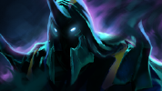
Abaddon
Mist Coil
Libera una espiral de niebla mortal que puede dañar a una unidad enemiga o sanar a una unidad aliada a cambio de parte de la vida de Abaddon.Aphotic Shield
Invoca energías oscuras alrededor de una unidad aliada, creando un escudo que absorbe una cantidad fija de daño antes de disiparse. Cuando el escudo es destruido explota e inflige daño igual a la cantidad que haya podido absorber en un área a su alrededor. Elimina algunos tipos de efectos negativos y aturdimientos al lanzarlo.Curse of Avernus
Abaddon golpea a un enemigo con una maldición gélida en cada ataque, haciendo que todas las unidades que ataquen al enemigo ralentizado reciban un aumento de velocidad de movimiento, además de un aumento de velocidad de ataque, durante un tiempo limitado.Borrowed Time
Al activarlo, cualquier daño que recibas te curará en vez de dañarte. Elimina la mayoría de efectos negativos. Si la habilidad no está en recarga, se activará automáticamente si tu vida baja de 400.
- 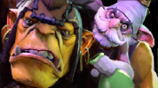
Alchemist
Acid Spray
Pulveriza ácido a gran presión sobre el área objetivo. Las unidades enemigas que caminen sobre el terreno contaminado reciben daño cada segundo y se reduce su armadura.Unstable Concoction
Alchemist prepara una mezcla inestable que puede lanzar a un héroe enemigo para aturdir e infligir daño en un área alrededor de la explosión. Cuanto más se prepare la mezcla, más daño causará y más rato aturdirá. Tras 5 segundos, alcanza su máximo potencial de daño y tiempo de aturdimiento. Sin embargo, tras 5,5 segundos, la mezcla explotará sobre Alchemist si no la lanza.Greevil's Greed
Alchemist obtiene oro adicional por matar a sus enemigos y al obtener la runa de recompensa. Con cada víctima, Alchemist obtiene oro base y una bonificación. Si Alchemist mata a otra unidad que dé oro en los siguientes 30 segundos, obtendrá una instancia adicional de oro que se añade al total. Además hace que las runas de recompensa produzcan 3 veces más oro de lo normal.Chemical Rage
Alchemist hace que su Ogro entre en un estado de furia inducida por químicos, reduciendo su tiempo de ataque base y aumentando su velocidad de movimiento y regeneración.
- 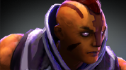
Anti-Mage
Mana Break
Quema el maná de un oponente con cada ataque. Ruptura de Maná inflige un 60% del maná quemado como daño al objetivo. Ruptura de Maná es un modificador de ataque único y no es acumulable con otros modificadores de ataque únicos.Blink
Teletransportación a corta distancia que le permite a Anti-Mage entrar y salir del combate.Spell Shield
Aumenta la resistencia al daño mágico de Anti-Mage.Mana Void
Causa daño a la unidad objetivo y a los enemigos cercanos por cada punto de maná que le falte a ésta. El objetivo principal también queda miniaturdido.
- 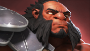
Axe
Berserker's Call
Axe se burla de las unidades enemigas cercanas, forzándolas a que le ataquen, otorgándole al mismo tiempo armadura adicional mientras dure.Battle Hunger
Enfurece a una unidad enemiga, ralentizándola e infligiéndole daño a lo largo del tiempo hasta que mate a otra unidad o termine el efecto. Axe obtiene velocidad de movimiento por cada unidad afectada con Sed de Batalla.Counter Helix
Cuando es atacado, Axe realiza un Contraataque Espiral, dañando a todos los enemigos cercanos.Culling Blade
Axe detecta las debilidades y ataca, matando instantáneamente a una unidad enemiga con poca vida o infligiendo daño moderado. Cuando un héroe enemigo es asesinado con Hoja Selectiva, el tiempo de recarga se reinicia y Axe y las unidades aliadas cercanas obtienen velocidad de movimiento adicional.
- 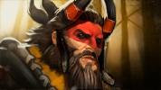
Beastmaster
Wild Axes
Beastmaster lanza sus dos hachas, que al cabo de poco se se entrecruzan y vuelven a él. Cada hacha sólo puede dañar a una unidad una vez.Call of the Wild
Beastmaster llama a las bestias salvajes para ayudarle. La duración, fuerza y número de bestias aumenta según el nivel. Las invocaciones previas desaparecen al lanzarlo.Inner Beast
Libera a la bestia interior de los aliados cercanos, aumentando pasivamente su velocidad de ataque.Primal Roar
Beastmaster suelta un rugido ensordecedor que inflije daño y paraliza a su objetivo. Las unidades enemigas cercanas a la onda del rugido reciben algo de daño y pierden velocidad de movimiento y de ataque. Dada la fuerza del rugido, todas las unidades entre Beastmaster y su presa son apartadas, creando un camino abierto.
- 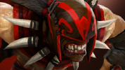
Bloodseeker
Bloodrage
Conduce a una unidad a una furia sedienta de sangre, durante la cual obtiene más daño de ataque y aumenta el daño que recibe. Las unidades que estén bajo los efectos de Furia Sangrienta se curarán un porcentaje de la vida máxima de cualquiera de las unidades que maten. Las unidades que estén bajo los efectos de Furia Sangrienta cuando sean asesinadas curarán con un porcentaje de su vida máxima a su asesino.Blood Rite
Bloodseeker consagra un área con sangre sagrada. Tras 3 segundos, el ritual se completa, dañado y silenciado a los enemigos atrapados en la zona.Thirst
Bloodseeker se vuelve más fuerte gracias a las heridas de sus enemigos, otorgándole velocidad de movimiento y daño de ataque adicionales cuando la vida de un enemigo se reduce a menos de un 75%. Esta bonificación aumenta a medida que baja la vida de los enemigos. Si la vida de un enemigo baja del 25%, obtendrá visión verdadera de ese héroe. Las bonificaciones se acumulan por héroe.Rupture
Causa a una unidad enemiga daño cuando éste se mueve.
- 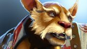
Brewmaster
Thunder Clap
Golpea el suelo, inflingiendo daño y reduciendo la velocidad de movimiento y la velocidad de ataque de las unidades enemigas cercanas.Drunken Haze
Empapa una unidad enemiga en alcohol, causando que sus ataques tengan una posibilidad de fallar y reduciendo su velocidad de movimiento.Drunken Brawler
Da una oportunidad de esquivar ataques y de asestar golpes críticos.Primal Split
Divide a Brewmaster en elementos, formando 3 guerreros especializados, expertos en supervivencia. Si uno de ellos sobrevive hasta el final de su tiempo de invocación, el Brewmaster renace.
- 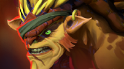
Bristleback
Viscous Nasal Goo
Cubre al objetivo en moco, causándole tener menor velocidad de movimiento y armadura. Multiples casteos se acumulan y refrescan su duración.Quill Spray
Rocía a las unidades enemigas con espinas, infligiendo daño en un área alrededor de Bristleback. Inflige daño adicional por cada vez que una unidad haya sido rociada por Lluvia de Espinas en los últimos 14 segundos.Bristleback
Bristleback recibe menos daño si le atacan por el lateral o por detrás. Si Bristleback recibe 210 de daño por detrás, lanza una Lluvia de Espinas del nivel actual.Warpath
Bristleback entra en un estado de furia cada vez que lanza un hechizo, aumentando su velocidad de movimiento y daño.
- 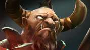
Centaur Warrunner
Hoof Stomp
Aporrea el suelo, aturdiendo y dañando a las unidades enemigas cercanas.Double Edge
Centaur realiza un poderoso ataque cuerpo a cuerpo, infligiendo daño tanto a sí mismo como en un área alrededor de su objetivo. Centaur no puede morir por Doble Filo.Return
Centaur contrarresta todos los ataques, dañando al atacante según un porcentaje de la fuerza de Centaur.Stampede
Centaur lidera a todos los aliados en una feroz carga haciendo que se muevan a través de las unidades y a máxima velocidad y detiene a los enemigos que pisen. Los enemigos pisoteados recibe daño según la fuerza de Warrunner. Cada enemigo sólo puede ser pisoteado una vez. Mejorable con el Cetro de Aghanim.
- 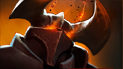
Chaos Knight
Chaos Bolt
Lanza un misterioso rayo de energía a la unidad objetivo. Aturde una cantidad aleatoria de tiempo e inflige una cantidad aleatoria de daño.Reality Rift
Te teletransporta a ti, a cualquier imagen que tengas y a la unidad objetivo a un punto al azar en la línea entre ambos. Te otorga daño adicional en tu próximo ataque.Chaos Strike
Cada uno de los ataques de Chaos Knight tiene la posibilidad de infligir daño adicional y reducir la armadura del objeto en 5 durante 8 segundos.Phantasm
Invoca varias copias de Chaos Knight desde dimensiones paralelas. Hay un 50% de probabilidades de que se invoque un fantasma adicional. Los fantasmas infligen daño completo, pero reciben el doble de daño.
- 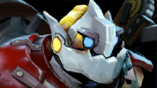
Clockwerk
Battery Assault
Descarga metralla violentamente contra unidades enemigas cercanas aleatorias, infligiendo una cantidad de daño mágico mínima y miniaturdiendo.Power Cogs
Forma una barrera de engranajes electrificados alrededor de Clockwerk, atrapando a cualquier unidad cercana. Los enemigos fuera de la trampa que toquen un engranaje retroceden, perdiendo vida y maná. Después de que un engranaje electrocuta a alguien, se descarga. Los enemigos pueden destruir los engranajes con sus ataques, pero Clockwerk puede destruirlos con uno.Rocket Flare
Dispara una bengala con alcance global que explota sobre un área en concreto, dañando a los enemigos y proporcionando visión durante 10 segundos.Hookshot
Dispara un garfio rápidamente al punto objetivo. Si el garfio alcanza a una unidad, Clockwerk se lanza hacia ese objetivo, aturdiéndolo e infligiéndole daño. Cualquier enemigo con el que Clockwerk choque por el camino es dañado y aturdido.
- 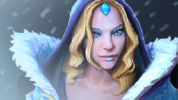
Crystal Maiden
Crystal Nova
Una explosión de hielo dañino ralentiza la velocidad de movimiento y la frecuencia de ataque de los enemigos en el área objetivo.Frostbite
Recubre a una unidad enemiga con hielo, impidiendo que se mueva o ataque y causándole 50 de daño cada medio segundo. Dura 10 segundos contra creeps de nivel 6 o inferior.Arcane Aura
Otorga regeneración de maná adicional a todas las unidades aliadas en el mapa. Esta bonificación tiene un efecto mayor para Crystal Maiden.Freezing Field
Envuelve a Crystal Maiden con explosiones de hielo al azar que ralentizan a los enemigos e infligen gran cantidad de daño. Dura 10 segundos.
- 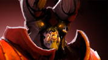
Doom
Devour
Consume a un creep neutral o enemigo, adquiriendo cualquier habilidad especial que posea.Scorched Earth
Cubre la tierra cercana de llamas, lo que daña a los enemigos y cura a Doom a la vez que recibe velocidad de movimiento aumentada.Infernal Blade
Doom blande su espada llameante y prende fuego al enemigo. Aturde durante 0.3 segundos y aplica una quemadura durante 4 segundos que inflige 25 + un 1.25% de la vida máxima del objetivo como daño por segundo.Doom
Inflige una maldición que impide que el héroe enemigo use habilidades u objetos, recibiendo también daño a lo largo del tiempo.
- 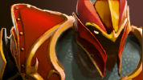
Dragon Knight
Breathe Fire
Lanza una bocanada de fuego frente a Dragon Knight que quema a los enemigos y reduce el daño que sus ataques infligen.Dragon Tail
Dragon Knight golpea a una unidad enemiga cercana con su escudo, aturdiéndola e infligiéndole daños menores. Cuando se encuentra en Forma de Dragón Ancestral, el alcance de lanzamiento aumenta a 400.Dragon Blood
La sangre vital del Dragón mejora la regeneración de vida y fortalece la armadura.Elder Dragon Form
Dragon Knight puede adoptar la forma de tres poderosos dragones ancestrales, incrementado su velocidad, el alcance de Cola de Dragón y otorgándole nuevos poderes.
- 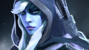
Drow Ranger
Frost Arrows
Añade un efecto congelante a los ataques de Drow, ralentizando el movimiento de los enemigos. Dura 1.5 segundos contra héroes y 7 segundos contra creeps. Flechas Gélidas es un modificador de ataque único y no es acumulable con otros modificadores de ataque únicos.Gust
Lanza una onda que silencia y empuja a las unidades enemigas. La distancia de retroceso es proporcional a lo cerca que se encuentren de ti.Precision Aura
Añade daño adicional a ella y sus aliados en base a su agilidad.Marksmanship
La experiencia de batalla de Drow mejora su puntería y efectividad en combate, proporcionándole pasivamente Agilidad adicional. No otorga ninguna bonificación si hay héroes enemigos dentro de un alcance de 400.
- 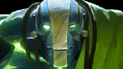
Earth Spirit
Boulder Smash
Earth Spirit golpea al enemigo o aliado objetivo, enviándolo en la dirección que está mirando. Si Earth Spirit selecciona un área como objetivo, golpeará al Remanente de Piedra más cercano en un radio de 200. El Remanente u objetivo empujado inflige daño a todas las unidades con las que impacte. Si un enemigo es golpeado por un Remanente de Piedra será aturdido. Los Remanentes de Piedra recorren una distancia mayor que las otras unidades.Rolling Boulder
Earth Spirit se convierte en una roca y, tras un retraso de 0.6 segundos, rueda hacia el lugar objetivo y daña a las unidades enemigas. Si impacta contra un héroe enemigo o es aturdido se detendrá. Si rueda por encima de un Remanente de Piedra, aumentará su velocidad y la distancia recorrida, disminuyendo la velocidad de movimiento de los enemigos impactados por la piedra.Stone Remnant
Llama a un Remanente de Piedra a la ubicación objetivo. Los Remanentes de Piedra no tienen visión, son invulnerables y pueden ser usados con las habilidades de Earth Spirit. Llamar a un Remanente de Piedra consume una carga, que se regenera con el tiempo.Magnetize
Magnetiza una pequeña area, causándoles daño. Las unidades cerca de los remanentes hacen que estos exploten, dañando a todo su alrededor.

Earthshaker
Fissure
Aporrea el suelo con un poderoso tótem, creando una cresta de roca infranqueable que aturde y daña a las unidades enemigas en línea recta.Enchant Totem
Le da poder a su tótem, haciendo que Earthshaker cause daño adicional en su siguiente golpe.Aftershock
Hace que la tierra tiemble bajo sus pies, añadiendo daño adicional y aturdiendo a las unidades enemigas cercanas cuando Earthshaker lanza sus habilidades.Shockwave
Ondas viajan por el suelo, dañando a las unidades enemigas. Cada enemigo causa un eco que daña a las demás unidades.
- 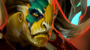
Elder Titan
Echo Stomp
Elder Titan y su Espíritu Astral pisotean el suelo, dañando y dejando inconscientes a las unidades enemigas cercanas a su alrededor. El pisotón de Elder Titan inflige daño físico, mientras que el del Espíritu inflige daño mágico.Astral Spirit
Elder Titan envía a su Espíritu Astral, un aspecto de sí mismo traído de planos ocultos. El Espíritu daña a cualquier unidad que atraviese. Cuando se une de nuevo con Titan, le otorga daño y velocidad de movimiento adicionales por cada unidad dañada. El Espíritu Astral posee las habilidades Pisotón Resonante, Devolver Espíritu y Orden Natural.Natural Order
Reduce todos los elementos a su nivel más básico, eliminando la armadura base y resistencia al daño mágico de las unidades enemigas cercanas.Earth Splitter
Crea una grieta serrada en frente de Elder Titan. Tras 3 segundos, la grieta implosiona, ralentizando el movimiento e infligiendo daño a cada enemigo según su vida máxima. La mitad del daño realizado es daño mágico, mientras que la otra mitad es daño físico.
- 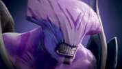
Faceless Void
Time Walk
Corre al lugar objetivo al mismo tiempo que deshace todo el daño recibido en los últimos 2 segundos.Time Dilation
Faceless Void atrapa a todos los enemigos cercanos en un campo de dilatación temporal durante 6 segundos, congelando sus tiempos de recarga y ralentizando su velocidad de movimiento y ataque un 10% por cada tiempo de recarga congelado.Time Lock
Añade la posibilidad de que tus ataques congelen a una unidad enemiga en el tiempo, aturdiéndola e infligiéndole daño adicional.Cronosphere
Crea una burbuja en el espacio-tiempo, atrapando a todas las unidades bajo su influencia y haciendo que te muevas muy rápido dentro de ella. Sólo Faceless Void es inmune y las unidades que él controla no se ven afectadas. Las unidades invisibles dentro de la esfera serán reveladas.
- 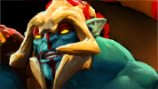
Huskar
Inner Vitality
Huskar se cura en base a su fuerza. Si tiene menos del 35% de su vida, sana más rápido. Dura 16 segundos.Burning Spear
Huskar prende fuego a sus lanzas, infligiendo daño a lo largo del tiempo con su ataque normal. Múltiples ataques acumulan daño adicional. Cada ataque drena parte de la vida de Huskar. Dura 8 segundos.Berserker's Blood
Las heridas de Huskar alimentan su poder, aumentando su velocidad de ataque y su resistencia mágica según la vida que le falte.Life Break
Huskar consume parte de su vida para destruir la de un enemigo, saltando a un objetivo dentro de su rango de ataque para causar un porcentaje de los puntos de vida de ese héroe y ralentizarlo. Mientras salta, Huskar es inmune a los hechizos.
- 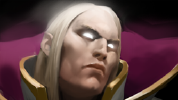
Invoker
Quas
Permite la manipulación de los elementos del hielo y otorga una bonificación permanente de fuerza. Cada instancia de Quas proporciona un aumento de regeneración de vida.Wex
Permite la manipulación de los elementos de la tormenta y otorga una bonificación permanente de agilidad. Cada instancia de Wex proporciona un aumento de velocidad de movimiento y de ataque.Exort
Permite la manipulación de los elementos del fuego y otorga una bonificación permanente de inteligencia. Cada instancia de Exort proporciona un aumento de daño de ataque.Invoke
Combina las propiedades de los elementos actualmente manipulados para crear un nuevo hechizo a disposición de Invoker.Cold Snap
Invoker absorbe el calor de un enemigo, helándolo hasta los huesos por un tiempo según el nivel de Quas. El enemigo recibe daño y es congelado brevemente. Recibir daño adicional durante este periodo volverá a congelar al enemigo, infligiendo daño adicional. Sólo se puede congelar al enemigo de vez en cuando, pero el tiempo de recarga de la congelación disminuye según el nivel de Quas.Ghost Walk
Invoker manipula las energías eléctricas y de hielo a su alrededor, haciendo su cuerpo invisible. El desequilibrio elemental consecuente ralentiza a los enemigos cercanos según el nivel de Quas y ralentiza también a Invoker según el nivel de Wex.Tornado
Desata un veloz tornado que absorbe a las unidades enemigas a su paso, suspendiéndolas impotentemente en el aire brevemente antes de dejarlas caer hacia su perdición. Recorre más distancia según el nivel de Wex. Mantiene a los enemigos en el aire por un tiempo según el nivel de Quas. Causa daño base más el daño adicional basado en el nivel de Wex.EMP
Invoker acumula una carga de energía electromagnética en el lugar objetivo que detona automáticamente tras %delay% segundos. La detonación cubre un área, drenando maná según el nivel de Wex. Inflige daño por cada punto de maná drenado. Si PEM drena maná de un héroe enemigo, Invoker obtiene el 50% del maná drenado.Alacrity
Invoker infunde un inmenso torrente de energía a un aliado, aumentando su velocidad de ataque según el nivel de Wex y su daño según el nivel de Exort.Chaos Meteor
Invoker atrae un meteorito en llamas del espacio hacia el luger objetivo. Al caer, el meteorito rueda hacia delante, infligiendo daño constantemente según el nivel de Exort, y rueda más lejos según el nivel de Wex. Las unidades golpeadas por el meteorito arden en llamas por unos instantes, recibiendo daño adicional según el nivel de Exort.Sun Strike
Envía un rayo catastrófico de violenta energía del sol contra el lugar objetivo, incinerando a todos los enemigos situados bajo él una vez alcanza la Tierra. Inflige daño según el nivel de Exort, sin embargo este daño se reparte equitativamente entre todos los enemigos impactados.Forge Spirit
Invoca a un espíritu de fuego que pelea a su lado, disminuyendo la armadura de su objetivo.Ice Wall
Genera un muro de hielo sólido directamente en frente de Invoker durante un tiempo según el nivel de Quas. El frío glacial que emana de él ralentiza drásticamente a los enemigos cercanos según el nivel de Quas e inlige daño cada segundo según el nivel de Exort.Deafening Blast
Invoker desata una poderosa onda sónica en frente de él, infligiendo daño a cualquier unidad enemiga con la que impacte según el nivel de Exort. El simple impacto de la explosión es suficiente para hacer retroceder a las unidades enemigas un tiempo según el nivel de Quas, y luego desarmar sus ataques por un tiempo según el nivel de Wex. Si Quas, Wex, y Exort están a su máximo nivel, Explosión Ensordecedora se convierte en una onda expansiva circular que se expande alrededor de Invoker.
- 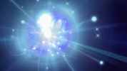
Io
Tether
Vincula a Io a una unidad aliada, proporcionando una bonificación de velocidad de movimiento para ambos. Cuando Io restaura vida o maná, las unidades vinculadas ganan 1.5 veces esa cantidad. Cualquier unidad enemiga que cruza el vínculo es ralentizada. El vínculo se rompe cuando la unidad aliada se aleja demasiado o Io cancela el vínculo.Spirits
Invoca cinco espíritus de partículas que danzan en círculo alrededor de Io. Si una partícula toca a un héroe enemigo, explota, dañando a todas las unidades enemigas a su alrededor. Los creeps reciben algo de daño al tocar un espíritu, pero no hacen que explote. Cuando finaliza, los espíritus restantes explotan.Overcharge
Io obtiene velocidad de ataque adicional y reducción de daño, a coste de perder un porcentaje de su vida y maná actual por segundo. Si Io está Vinculado a un aliado, esa unidad también obtiene los beneficios.Relocate
Teletransporta a Io y a cualquier aliado vinculado a cualquier punto del mapa. Una vez termine la habilidad Io y cualquier aliado vinculado volverán al punto original. Haz doble clic para teletransportarte a la fuente de tu base.

Juggernaut
Blade Fury
Provoca un torbellino de fuerza destructiva alrededor de Juggernaut, haciéndole inmune a la magia y causando daño a las unidades enemigas cercanas. Dura 5 segundos.Healing Ward
Invoca un Guardián Sanador que cura a todas las unidades aliadas cercanas, según su vida máxima. El Guardián Sanador puede moverse con una velocidad de 420 tras haber sido invocado. Dura 25 segundos.Blade Dance
Le da a Juggernaut la oportunidad de infligir el doble de daño con cada ataque.Omnislash
Juggernaut se abalanza sobre la unidad enemiga objetivo con un ataque dañino, tras lo que acuchilla a otras unidades enemigas cercanas, infligiendo entre 200-225 de daño por corte. Juggernaut es invulnerable durante el efecto.
- 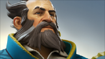
Kunkka
Torrent
Invoca un torrente ascendente que, tras un breve retraso, lanza a unidades enemigas al aire aturdiéndolas, infligiéndoles daño y ralentizándolas.Tidebringer
La legendaria espada de Kunkka le otorga daño adicional además de hendir una gran área delante de él con un solo ataque.X Marks the Spot
Marca la posición de un héroe aliado o enemigo con una X y lo devuelve a ese lugar tras unos segundos. Kunkka puede activar el retorno en cualquier momento de su duración. Dura el doble en héroes aliados.Ghostship
Invoca a un barco fantasma que choca contra el campo de batalla dañando y aturdiendo a los enemigos en un gran area.
- 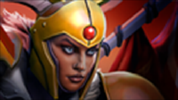
Legion Commander
Overwhelming Odds
Vuelve la superioridad numérica del enemigo en su contra, infligiendo daño y otorgándote velocidad de movimiento adicional por cada unidad o héroe. Inflige daño adicional a las ilusiones y unidades invocadas en forma de un porcentaje de su vida actual.Press The Attack
Elimina efectos negativos e incapacitaciones de la unidad objetivo aliada y le otorga velocidad de ataque y regeneración de vida adicionales durante un corto periodo de tiempo.Moment of Courage
Al ser atacada, Legion Commander tiene la posibilidad de contraatacar inmediatamente con robo de vida adicional.Duel
Legion Commander y el héroe enemigo objetivo se ven forzados a atacarse el uno al otro durante un breve periodo de tiempo. Ninguno de los dos héroes puede usar objetos o habilidades. Si uno de los dos héroes muere durante el efecto, el héroe ganador del Duelo obtiene daño adicional permanente.
- 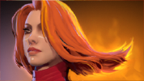
Lina
Dragon Slave
Lina canaliza el aliento de un dragón, lanzando una oleada de fuego que abrasa a todos los enemigos a su paso.Light Strike Array
Invoca una columna de llamas que daña y aturde a los enemigos.Fiery Soul
Otorga una bonificación de velocidad de movimiento y ataque cada vez que Lina lanza un hechizo. Es acumulable. Dura 10 segundos.Laguna Blade.
Lanza un rayo a un único enemigo, causando gran cantidad de daño
- 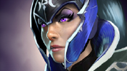
Luna
Lucent Beam
Invoca un haz de energía lunar sobre un enemigo, dañándolo y aturdiéndolo brevementeMoon Glaive
Mejora la guja de Luna, haciendo que sus ataques reboten entre las unidades enemigas. Cada rebote inflige menos daño.Lunar Blessing
Aumenta el daño realizado por los ataques de Luna y de los héroes aliados cercanos. Luna también es bendecida con alcance de visión nocturna mejorado.Eclipse
Hostiga a los enemigos cercanos de forma aleatoria con impactos del nivel actual de Haz Lumínico. Estos haces no aturden a sus objetivos y existe un número máximo de veces que un único objetivo puede ser impactado. También convierte el día en noche durante 10 segundos.
- 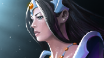
Mirana
Starstorm
Llama a una tormenta estelar que daña a todas las unidades a su alrededor.Sacred Arrow
Dispara una flecha con precisión letal, causando daño y aturdiendo a la primera unidad enemiga que golpea. La duración del aturdimiento varía entre 0.01 y 5 segundos, con hasta 140 de daño adicional según la distancia recorrida por la flecha. Mata instantáneamente al primer creep no ancestral que golpee.Leap
Mirana se lanza a la batalla, potenciando a las unidades aliadas con un feroz rugido que otorga velocidad de ataque y movimiento adicional. La bonificación de velocidad dura 10 segundos.Moonlight Shadow
Mirana y todos los héroes aliados se vuelven invisibles. Si un héroe es revelado, la invisibilidad se restaura tras un breve retraso siempre y cuando la duración de Sombra a la Luz de la Luna no haya terminado.
- 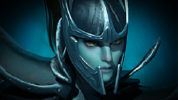
Phantom Assassin
Stifling Dagger
Lanza una daga que realentiza y daña a su objetivo.Phantom Strike
Te teletransporta a una unidad, aliada o enemiga, y te otorga una bonificación de velocidad de ataque al atacar si es una unidad enemiga.Blur
Phantom Assassin se centra en su interior, aumentando su habilidad para evadir ataques enemigos y permitiéndole desaparecer del minimapa de los héroes enemigos cuando está lejos de ellos. Se acumula a la baja con otras fuentes de evasión.Coup de Grace
Phantom Assassin refina sus habilidades en combate, obteniendo la posibilidad de infligir un devastador impacto crítico a las unidades enemigas. Daga Sofocante comparte la misma posibilidad de impacto crítico.
- 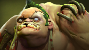
Pudge
Meathook
Lanza un gancho hacia el objetivo, atrayendo a la primer unidad que se encuentre.Rot
Una nube tóxica que inflige intenso daño y ralentiza el movimiento, dañando no sólo a las unidades enemigas, sino también al propio Pudge.Flesh Heap
Otorga a Pudge resistencia al daño mágico y también una bonificación de fuerza que aumenta cada vez que Pudge mata a un héroe enemigo o muere en sus inmediaciones. Montón de Carne es retroactiva, es decir, puede obtener cargas antes de aprenderla, que pasan a ser activas cuando se aprende.Dismember
Pudge se aferra a una unidad enemiga, incapacitándola y dañándola a lo largo del tiempo. Pudge se cura la misma cantidad de daño que inflige. Dura 3 segundos contra héroes y 6 segundos contra creeps.
- 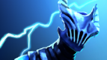
Razor
Plasma Field
Libera una onda de plasma energético que aumenta su poder a medida que se expande, pero que también electrocuta al contraerse, infligiendo daño a las unidades enemigas que encuentra a su paso. El daño aumenta cuanto más alejado esté el enemigo de Razor.Static Link
Crea un vínculo cargado entre Razor y un Héroe enemigo, robándole daño al objetivo y dándoselo a Razor.Unstable Current
Razor se mueve a mayor velocidad y cualquier habilidad lanzada sobre él es contrarrestada con una sacudida instantánea de electricidad dañina y ralentizante que elimina los efectos positivos de los enemigos.Eye of the Storm
Una poderosa tormenta eléctrica azota a las unidades enemigas con menor vida, infligiendo daño y reduciendo su armadura.
- 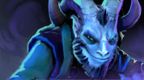
Riki
Smoke Screen
Lanza una bomba de humo que silencia a los enemigos, hace que fallen la mayoría de los ataques y ralentiza su velocidad de movimiento.Blink Strike
Te teletransporta detrás de la unidad objetivo, golpeándola con daño adicional si es un enemigo.Cloak and Dagger
Riki se desvanece en las sombras, haciéndose invisible. Cada ataque que Riki realice a su enemigo por detrás inflige daño adicional en base a su Agilidad. Cuando Riki ataca se vuelve visible.Tricks of the Trade
Se desvanece del mundo a la vez que ataca a cada enemigo por detrás en un área de efecto de 500 una vez por segundo.
- 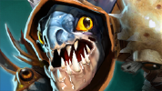
Slark
Dark Pact
Tras un breve retraso, Slark sacrifica parte de su sangre vital, purgando la mayoría de efectos negativos y causando daño a unidades enemigas a su alrededor y a sí mismo. Slark sólo recibe un 50% del daño.Pounce
Slark da un brinco, aferrándose al primer héroe que encuentra. Esa unidad recibe daño y queda unida a Slark, y sólo puede moverse una distancia limitada respecto al punto de aterrizaje de Slark.Essence Shift
Slark roba la esencia vital de los héroes enemigos con sus ataques, drenando cada uno de sus atributos y convirtiéndolos en Agilidad adicional.Shadow Dance
Slark se oculta en una nube de sombras, obteniendo inmunidad a ser detectado. Atacar, lanzar hechizos y usar objetos no revelarán a Slark. Pasivamente, mientras no sea visto por el equipo enemigo, Slark obtiene velocidad de movimiento y regeneración de vida adicionales.
- 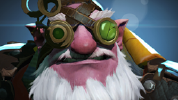
Sniper
Shrapnel
Consume una carga para disparar una bola de metralla que riega el área objetivo con perdigones explosivos. Los enemigos reciben daño y son ralentizados. Revela la zona objetivo. Las cargas de Metralla se recargan cada 55 segundos.Headshot
Sniper aumenta su precisión, dándole la posibilidad de causar daño adicional y detener brevemente los movimientos de sus enemigos.Take Aim
Aumenta el alcance de ataque del rifle de Sniper.Assassinate
Sniper apunta a una unidad enemiga objetivo y, tras 2 segundos, realiza un disparo devastador que inflige daño a gran distancia y miniaturde al objetivo.
- 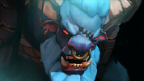
Spirit Breaker
Charge of Darkness
Spirit Breaker pone su punto de mira en una unidad enemiga y empieza a embestir a través de todos los objetos. Todas las unidades enemigas atravesadas y el objetivo son golpeadas con un Gran Golpetazo. Si la unidad objetivo muere, Spirit Breaker cambia de objetivo a la unidad enemiga más cercana a ese lugar.Empowering Haste
Hace que Spirit Breaker obtenga poder con una mayor velocidad de movimiento. Su presencia aumenta la velocidad de movimiento de las unidades aliadas cercanas. Se puede lanzar para aumentar la bonificación de velocidad de movimiento durante 6 segundos. Sin embargo, tras esto, la bonificación pasiva se reducirá a la mitad mientras la habilidad está recargándose.Greater Bash
Da la oportunidad de aturdir y hacer retroceder una unidad enemiga al atacar, así como también obtener velocidad de movimiento adicional cuando se produce el golpe. Inflige un porcentaje de tu velocidad de movimiento como daño.Nether Strike
Spirit Breaker se desplaza por el reino abisal, reapareciendo junto a su desafortunada víctima. Al reaparecer, inflige un Gran Golpetazo del nivel actual y causa daño adicional.
- 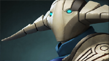
Sven
Storm Hammer
Sven libera su guantelete mágico que causa daño y aturde a las unidades enemigas.Great Cleave
Sven ataca con gran fuerza, abriendo heridas en todas las unidades enemigas cercanas con su ataque.Warcry
El Grito de Guerra de Sven anima a sus aliados a combatir, aumentando su velocidad de movimiento y armadura. Dura 8 segundos.God's Strength
Sven canaliza su fuerza interior, obteniendo daño adicional durante 25 segundos.

Vengeful Spirit
Magic Missile
Dispara un misil mágico contra la unidad objetivo, aturdiéndola e infligiéndole daño.Wave of Terror
Vengeful Spirit desata un grito perverso, debilitando la armadura de sus enemigos y otorgándole visión del recorrido.Vengeance Aura
La presencia de Vengeful Spirit aumenta el daño físico de las unidades aliadas cercanas. Si Vengeful Spirit es asesinada, su asesino será poseído por un Aura Vengativa negativa, reduciendo el daño de su asesino y sus aliados cercanos hasta que Vengeful Spirit reviva.Nether Swap
Intercambia posiciones instantáneamente con el héroe objetivo, amigo o enemigo. Intercambio Abisal interrumpe las habilidades canalizadas del objetivo.
- 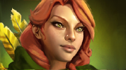
Windranger
Shackleshot
Encadena al objetivo a una unidad enemiga o un árbol directamente a sus espaldas. Si no hay unidades o árboles cerca, la duración del aturdimiento se reduce a 0.75.Powershot
Windranger carga su arco hasta un segundo para realizar un único y potente disparo, que cuanto más tiempo se cargue más daño hará. La flecha inflige daño a los enemigas y destruye los árboles a su paso. Por cada enemigo que golpea el Disparo Potenciado, su daño se reduce un 10%.Windrun
Aumenta la velocidad de movimiento y otorga evasión contra todos los ataques físicos, además de ralentizar el movimiento de los enemigos cercanos.Focus Fire
Windranger canaliza el viento obteniendo un 500 de velocidad de ataque adicional contra una unidad o estructura enemiga, aunque con daño reducido. El daño adicional por los efectos secundarios de objetos no se reduce. Dura 20 segundos.
- 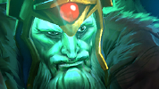
Wraith King
Wraithfire Blast
Wraith King abrasa a una unidad enemiga con fuego espectral, infligiéndole daño y aturdiéndola, además produce daño a lo largo del tiempo y ralentiza al objetivo.Vampiric Aura
Las unidades aliadas cercanas recuperan vida según el daño que causan al atacar unidades enemigas.Mortal Strike
Wraith King obtiene pasivamente la posibilidad de infligir daño adicional al atacar.Reincarnation
La forma de Wraith King se regenera tras su muerte, haciendo que resucite al morir en combate. Al morir, las unidades enemigas en un radio de 900 serán ralentizadas.
- 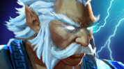
Zeus
Arc Lightning
Lanza un relámpago que rebota entre unidades enemigas cercanas.Lightning Bolt
Invoca un relámpago que golpea a una unidad enemiga, infligiendo daño y miniaturdiendo. Relámpago también proporciona visión verdadera y sin obstrucción alrededor del objetivo en un radio de 750. Puede lanzarse sobre el suelo, afectando al héroe enemigo más cercano en un radio de 325.Static Field
Zeus electrocuta a todas las unidades enemigas cercanas cuando lanza un hechizo, infligiendo daño proporcional a su vida actual.Thundergod's Wrath
Azota a todos los héroes enemigos con un rayo, sin importar dónde se encuentren. Ira del Dios del Trueno también proporciona visión verdadera alrededor de cada héroe impactado. Si un héroe enemigo es invisible, no recibe daño, pero sigue proporcionando Visión Verdadera alrededor de ese héroe.